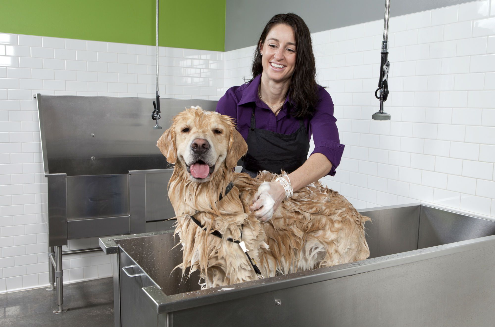
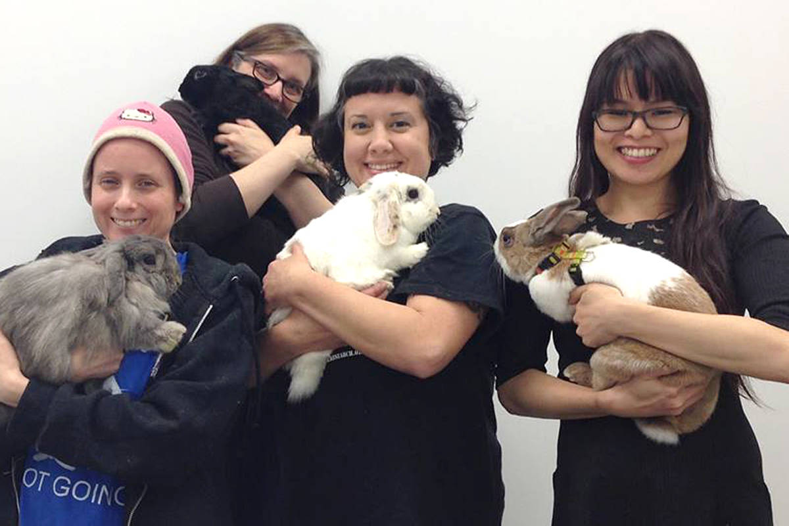

Animal Rescue
Services
Join us
Home
Re-Home a Dog
Re-Home a Cat
Re-Home another animal
Old page


We value our animals and staff here at Animal Rescue Services
Our animals are wash and groomed by proffesionals, and are let to free roam in rooms rather than staying in cages